Maguro Help
Version 0.2.3 · Windows · light theme on this site
Overview
Maguro is a multi-pane file manager for Windows. Each pane is a real Explorer view: the right-click menu, drag and drop, thumbnails, and the Windows copy dialog.
A new install opens with one pane. Add panes, up to sixteen in a 4×4 grid, when you need to copy, move, or compare without a second program.
Maguro is a fork of efww/grids by efww. It uses its own exe name (maguro.exe), window class, settings folder, and hotkey (Win+Shift+E).
Start it from the Start menu or the command line. maguro.exe C:\Work D:\Archive opens those folders. A .maguro file opens a saved session. .grids, .qdr, and grids.ini are not session files and are not imported.
F1 opens this Help in the browser. Ctrl+/ opens the compact in-app shortcut list. Ctrl+, opens Settings.

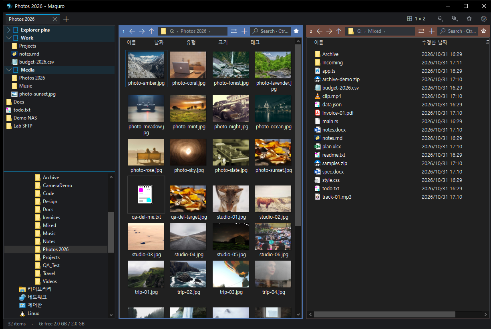
Address bar & toolbar
Keys are listed once in Shortcuts.
The address bar is the current folder. Click a path segment to go there. Click a chevron to list the folders inside. Click the current folder, the empty part of the bar, or use the address-bar shortcut (Ctrl+L, Alt+D, or F4) to type a path.
The toolbar has Layout, Save, Open session, and Favourites. Drive letters can sit on the tab row. A narrow window hides the last letters first. Settings → Appearance can hide the toolbar, the drive buttons, or the status bar.
The gear on the tab row opens the settings menu, and it stays when the toolbar is hidden. Separators divide it into groups. Save this tab, Open session, and Workspaces. Then File basket, Recent files, Open folders from Explorer windows, Folder watch, and the WinMerge commands when they apply. Then View (Show hidden files, Show file extensions, Left panel, Preview pane), Appearance (Light theme or Dark theme, Follow Windows light / dark, Selection colour, Language), and Behavior (Double-click empty space: parent folder, Bring Maguro to front from anywhere). Settings, Keyboard shortcuts, Help, and About Maguro are last. Show in folder is not on this menu. On Recent files it stays on the right-click menu, and Ctrl+Enter does the same.
The status bar shows how many items are selected and how much space is free.
The ⇄ button opens the selected folder (or the current one) in another pane and keeps this pane’s columns, sort, and view. With files selected it copies or moves them there, up to 10,000. With one pane it splits left and right. With nothing selected, or with only files selected and no folder, it duplicates the current folder and does not copy those files.
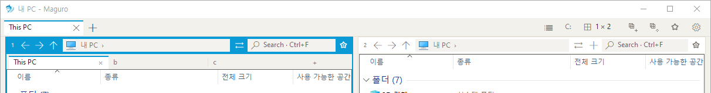
Layouts & panes
Keys are listed once in Shortcuts.
A pane is one folder. Click Layout for an even grid. Press and drag in that picker to set how many rows each column has. Arrow keys and Enter work there too.
Drag a splitter to resize. Double-click a splitter to split evenly. Limits: 4 columns, 4 rows in one column, 16 panes. A red drop preview means the layout would pass that limit.
Ctrl+Shift+M, or a double-click on a pane header, maximises that pane. Do it again to restore.
Settings → General → Default layout is the layout of a new tab, a new window, and a first start. A fresh install is one pane. An older maguro.json that never stored a layout still opens as two panes side by side. A path handed over by another launch still opens as a one-pane tab. A saved .maguro file keeps the layout stored in that file.


Move & duplicate panes
Drag a pane by its number badge or its header.
Drop on an edge to split the target pane. Drop in the centre to swap places. Hold Ctrl while dragging to copy the current pane tab: an edge splits and keeps this pane, and the centre adds a pane tab in that cell. Release Ctrl to move instead of copy.
The same swaps are on the keyboard: Alt+Shift+arrows moves the focus to the neighbour, and Ctrl+Alt+Shift+arrows swaps with that neighbour.


Window tabs & sessions
Keys are listed once in Shortcuts.
A window tab holds a whole layout: panes, folders, view, columns, filters, lock, and colour labels. The tab’s name follows the active folder until you rename it. Right-click a tab to rename, lock, duplicate, move it to a new window, save it, colour it, or open the tab list. A locked tab is kept when you close other tabs or close all tabs.
Ctrl+T opens a new tab. Ctrl+W closes the current tab. Ctrl+Shift+T reopens a closed tab. Ctrl+Alt+K duplicates the tab. Ctrl+Tab and Ctrl+Shift+Tab move between tabs.
Save (Ctrl+S) writes this tab. A tab that has never been saved asks for a name. A green dot on Save means this tab’s layout is unsaved. Ordinary file copies do not light that dot. Settings → Sessions can turn the dot off, and can save the session when you exit. Close with the window’s close button so Save on exit can write.
Open session opens a saved tab beside the current one. Opening several files opens each as its own tab.
Named sessions are .maguro files only, in maguro-sessions next to the settings file (%APPDATA%\Maguro\maguro-sessions, or beside the exe in portable mode). The file stores the layout, pane paths, views, columns, tints, pane tabs, and window tabs. It does not store favourites, the file basket, or context-menu choices. Those stay in maguro.json.
Maguro does not import .grids, .qdr, or grids.ini. Passing old.qdr on the command line does not open a session. Settings → Advanced can import a Maguro maguro.json or Maguro’s own older ini text. That ini is Maguro’s, not a grids file.
Ctrl+N opens another window, unless Single-window mode is on. That mode is on for a new install: a later launch, Ctrl+N, dragging a tab off the strip, and Move to new window open a tab in this window instead. Single instance, also on by default, keeps a later launch in this process.
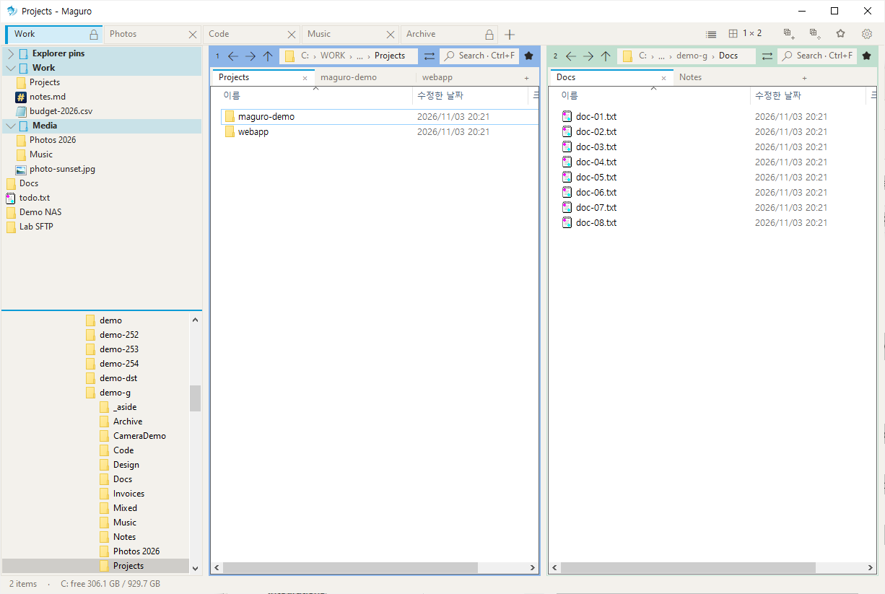
Tab list
Ctrl+Shift+L opens the tab list for this window, and closes it if it is already open. The list button at the right end of the tab row does the same. Tab list… on the tab right-click menu opens it, or focuses it when it is already open. Esc or Close dismisses it.
One row is one window tab. The columns are the tab name, the layout (for example 2×2, or 2 | 3 when the columns differ), the pane count, and a chip for each pane’s folder. The current tab has a cerulean bar. A locked tab shows its lock.
The filter matches the tab name, a folder’s display name, or its full path, ignoring case. The cue is “Filter by tab or folder”. Hover a folder chip and the tooltip under the chip shows the full path. This PC uses the localised This PC name, not the shell identifier.
F2 renames the selected tab in place. Enter keeps the new name. Esc cancels. Leaving the text unchanged does not pin an automatic folder name. An empty name, or a name that is only digits, clears a custom title so the tab follows its folder again. A custom name is kept up to 80 characters.
Enter, the Go button, or a double-click switches to that tab and closes the list. Del clears the filter when the filter box is focused and not empty. Otherwise Del closes the selected tab, when that tab is allowed to close.
The footer counts the tabs and reminds you: Enter goes, F2 renames, Del closes the tab, Esc closes the window.

Pane tabs
Keys are listed once in Shortcuts.
Pane tabs are extra folders inside one pane. They are not window tabs. With one folder the strip stays hidden. The button next to ⇄ adds a pane tab.
Middle-click, or the small close mark, closes a pane tab. Ctrl+Alt+T, Ctrl+Alt+W, Ctrl+Alt+Page Down, and Ctrl+Alt+Page Up create, close, and move between pane tabs. Those four run only while focus is in a pane, so they do not steal the window-tab shortcuts.
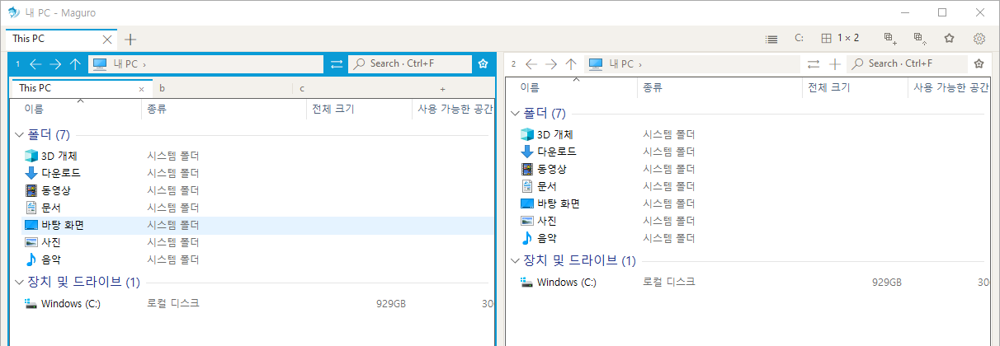
Pane colours
Right-click a pane header to set a colour label. The label is saved with the session and is separate from the window-tab colour.
The six swatches are Sky, Gray, Lavender, Sage, Peach, and Rose. Light and dark each have their own shades. This is the pane label, not the window accent. The accent, cerulean #0A9BD6 by default, is set under Settings → Appearance.
Favourites & folder tree
Keys are listed once in Shortcuts.
Favourites and the folder tree share the left panel. Drag the divider between them. Settings → Panes & view chooses which half is on top. Favourites on top is the default. Ctrl+Shift+E shows or hides the whole panel.
Favourites hold folders and files, in groups you can nest. Explorer Quick access pins and Explorer favourite files can appear in the panel too. Click a favourite to open it in the active pane. Click a group to expand or collapse. Search keeps parent groups so you can see where a match sits. Drop files or folders onto the panel to pin them. Drag to reorder.
A missing folder does not open as an empty path. Maguro offers to remove it from favourites or to change its location.
Ctrl+B opens the quick favourites list: search, rename, delete, and open in the active pane. The star on a pane adds or removes that pane’s folder.
The right-click menu has its own row, Add to Maguro favorites or Remove from Maguro favorites. That row is Maguro’s. It is not Explorer’s favourites command, and the Right-click menu settings page does not hide it.
In the folder tree, Enter or a double-click opens that folder in the pane. Ctrl-click or middle-click opens it as a pane tab.
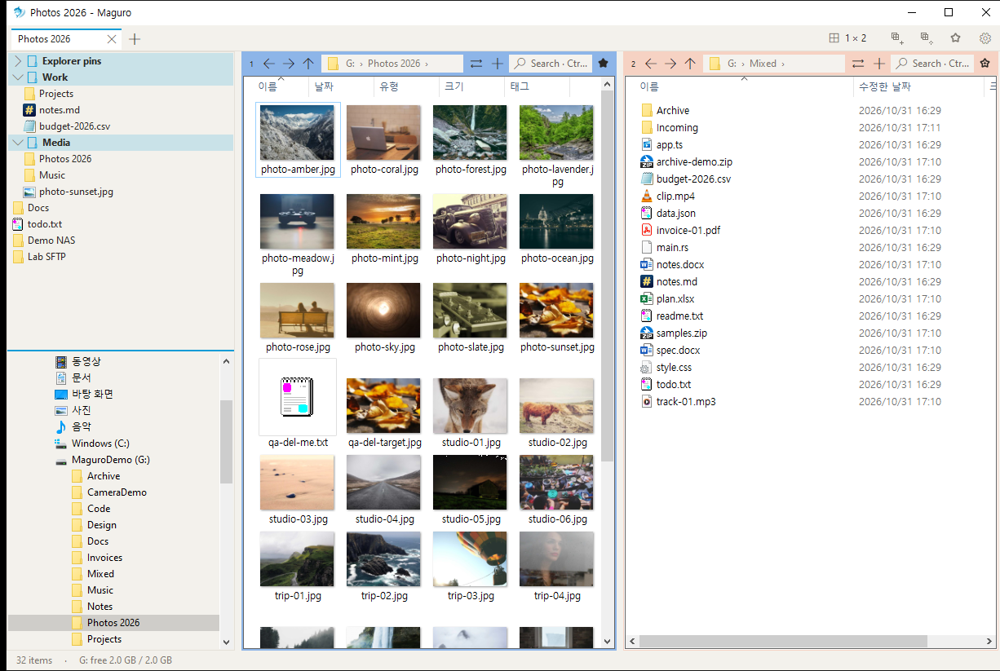
Search
Ctrl+F filters this folder as you type.
Tick Subfolders for a deep search. When Use Everything for search is on (the default) and voidtools Everything is running, Maguro asks Everything. Otherwise it walks the disk. The list shows up to 300 hits. Sort is remembered in maguro.json.
Settings → General shows whether Everything is installed and running, and can start it or install it with winget. The first subfolder search without Everything installed asks once.
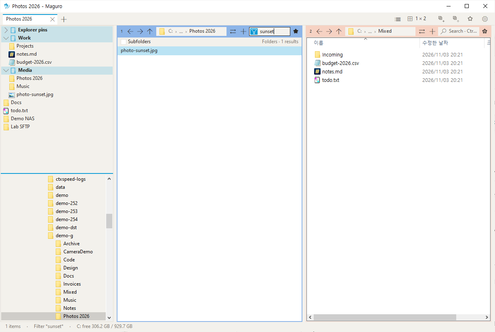
Preview & Quick look
Keys are listed once in Shortcuts.
F3 opens Quick look. Space does the same when Preview with Space is on, which it is by default. A space within a second of typing a name, or while Korean or Japanese IME text is being composed, stays part of that name. Ctrl+Space and Shift+Space are left alone.
Quick look shows pictures, including common camera RAW files, video thumbnails, an audio card, PDF pages, Markdown, plain text, code, CSV and TSV tables, ZIP listings, HWP, HWPX, and HWPT. Office, HTML, Outlook mail, fonts, and PDF can also use the Windows preview handler, the same mechanism as Explorer, when the file is 10 MB or smaller. Larger files of that kind show a card instead of waiting. What cannot be drawn becomes a short card of facts, never only an icon.
In Quick look, Enter opens the file with its default app and closes the preview. Shift+Enter or a right-click uses Open with. Esc, Space, or F3 closes the window. F2 renames the previewed file. Del deletes it. Ctrl+wheel zooms from 10% to 800%. Drag pans. The wheel scrolls a long page. Left and Right always step to the previous or next file. Up and Down scroll, and a fresh press at the end of the page steps to another file. The wheel steps to the next file only when Settings → Panes & view → Wheel moves to next/previous file is on. That option is off by default.
Alt+P shows or hides the preview pane on the right. It shows the focused file of the active pane, drawn by a Windows preview handler when there is one, otherwise a thumbnail or a short note. A named .maguro file does not change whether this pane is open. Double-click its splitter to return to the default width.
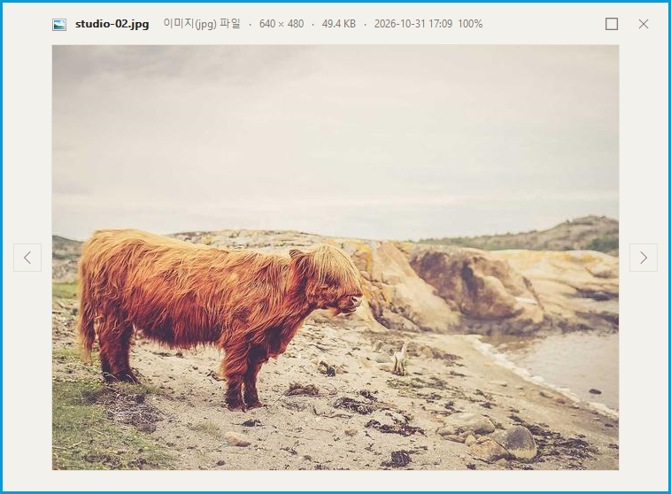
File operations
Keys are listed once in Shortcuts.
Copy, cut, paste, rename (F2), and delete follow Explorer. F5 reloads the active pane from anywhere and tries a failed network folder again. Ctrl+Shift+C copies the full path.
Paste and drag use IFileOperation, the Windows copy engine. You get the Windows progress window, undo, and the usual prompts. Maguro does not replace that dialog for an ordinary local copy.
Del follows the Windows default, usually the Recycle Bin. Shift+Del deletes permanently. Settings → File operations can confirm Del and can make the default delete either the Recycle Bin or a permanent delete. Confirm is on by default.
Drag between panes copies or moves. The default is Windows rules (same drive = move). Settings can force always copy, or always ask. Always ask shows Copy, Move, and Cancel. Drop on a folder row to put the files inside it.
Fast copy (Settings → File operations) is off by default. When it is on, a paste or drag that touches a network path, including a UNC path or an rclone mount, uses robocopy and Maguro’s own progress window, with Cancel. Fast paste on the right-click menu always uses that path, even for a local copy, and does not look at the setting. Local-to-local paste stays on IFileOperation unless you choose Fast paste. Robocopy here never mirrors or purges the destination. A move is a copy, then a delete of the sources only after every step succeeds.
Ctrl+V with a picture on the clipboard saves a PNG in the current folder.
Ctrl+Shift+N or F7 creates a folder. Ctrl+Alt+N creates a text file. The new-file name comes from Settings.
Ctrl+Shift+O gathers the same selected names into the other panes.
Ctrl+Alt+C compares the active pane’s folder with the next pane in WinMerge. The gear menu and the file list can compare two selected files, or one file with the same name in another pane. Set the WinMerge path under Settings → General. An empty path means auto-detect. The WinMerge rows on the right-click menu stay off until you turn them on under Settings → Right-click menu items.
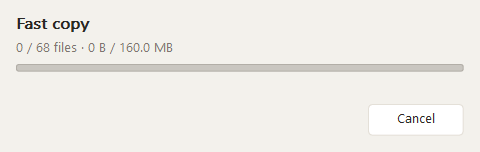
Batch rename
Ctrl+Shift+R, or Batch rename on the right-click menu, opens the batch rename window for the selection. It does not open on the Recent files pane. The window is in the same style as Settings: flat caption, cards, and the same tick boxes. Rules sit on the left, the live preview on the right. Add rule is at the top right. Undo is at the bottom left. Close and Rename are at the bottom right.
The toolbar filters the batch to files, folders, or both, and to an extension list. Folders ignore an extension list. Presets load and save from %APPDATA%\Maguro\rename-presets. They are not stored in maguro.json.
Rules run from top to bottom. Each rule has its own tick, and can move up or down. The kinds are:
Replace — find and replace, with optional case sensitivity and an option to include the extension. Prefix and Suffix — added to the stem, not the extension. Case — lower, upper, title, or sentence, optionally including the extension. Extension — a new extension; folders skip this rule. Number — start, step, zero-padding, and a position (before the name, after the name, or at a character). The counter follows the item’s place in the batch, and skipped rows are not counted. Date — modified, created, or accessed time, with a pattern of year, month, day, hour, minute, and second. Place it as a prefix, a suffix, or a replacement of the stem. There is no EXIF read. Insert, Delete, and Trim — character edits. An empty trim removes whitespace. Regex — Rust regular expressions. $1 is the first capture. An empty pattern does nothing. A bad pattern is reported on that row.
The preview shows the current name, the new name, and the span that changed. Filtered items stay visible and are marked skipped. A row that cannot be applied shows the first problem, in this order: empty name, invalid characters, a reserved name, a trailing space or dot, a name that is too long, a duplicate in the batch, a name that already exists, or a bad pattern.
Rename applies only the rows that changed and have no problem. The rename itself goes through IFileOperation, with undo. If a later wave fails, earlier waves in that batch are rolled back. Maguro also keeps its own undo stack of up to 20 batches in rename-undo.json. The Undo button and Ctrl+Z reverse the last batch and skip files that are no longer there. After a successful rename the rule list can reset to one empty Replace rule.
Dropdowns in this window, and in Settings, are styled combo boxes. See Theme & styled controls.
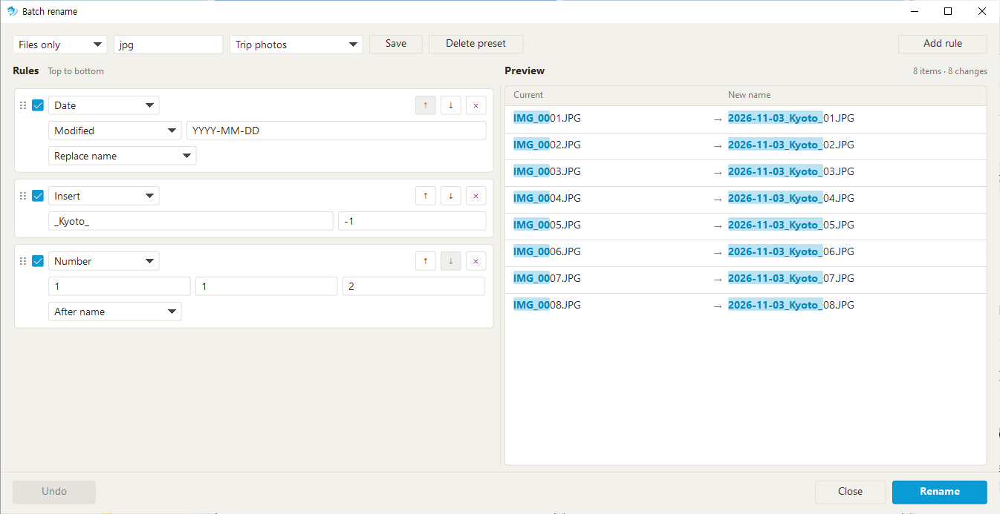
File Basket
Ctrl+Shift+B toggles the File Basket, a small always-on-top window. Drop files or folders onto it, or press Ctrl+Alt+B to add the active selection. The list stores paths, not copies. The paths live in maguro.json, not in a .maguro session. Taking an item off the list leaves the original in place.
Copy to active pane and Move to active pane use IFileOperation, the same engine as a pane paste. Select all selects every row. A click selects one row. Ctrl-click toggles a row. Shift-click selects the range from the anchor row. Drag the selection onto a pane or onto Explorer to copy those files. Ctrl copies. Shift moves. Alt and Ctrl+Shift do not create a shortcut. A drop on a pane runs on a worker thread and shows the Windows progress window. Explorer accepts the same drag. Remove and Clear change the list only.
A missing original stays on the list, marked missing, until you remove it. Copy and move skip missing items.
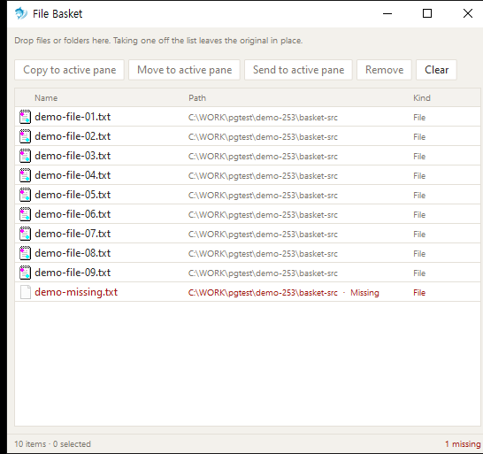
Folder Watch
Ctrl+Shift+W opens Folder Watch. Add a folder, add a file, or add the active pane. A folder row can include subfolders. Each row uses the same tick as Settings.
Maguro notifies you when something changes, and only while Maguro is running. There is no tray icon and no background service. The list is stored in maguro.json. You can watch up to 32 folders and files. A watched file that disappears stays on the list as missing until you delete the row. A folder that is already watched, or a file that is already watched, is not added twice.
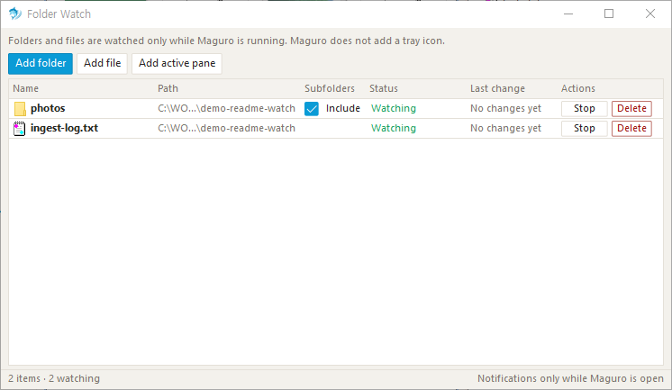
Clipboard path
While Maguro is running, Win+Alt+V opens the clipboard path even when another window is in front. A folder opens in a new tab. A file opens with its default app.
A copied file (CF_HDROP) wins over plain text. Text is trimmed, quotes are removed, a file: URL is accepted, environment variables are expanded, and only the first line is used. If nothing on the clipboard is a folder or a file, Maguro says so. If the path is missing, it says so.
The hotkey is on by default. Settings → General turns it off, which unregisters it. Settings → Shortcuts can change the chord. If another app’s file dialog is in front, the hotkey is handed to that dialog instead of opening a tab.
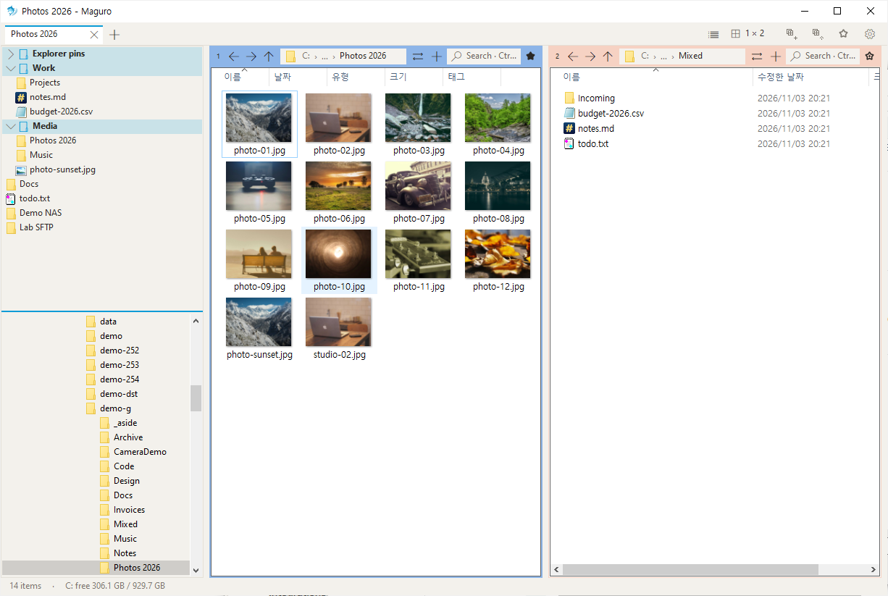
Workspaces
Workspaces store up to nine named layouts. Each slot keeps a name and a .maguro snapshot: tabs, panes, and folders. The slots live in maguro.json, not as separate files. These chords are not global hotkeys.
Ctrl+Alt+1 through 9 loads a slot. Ctrl+Alt+Shift+1 through 9 saves the current layout into that slot. The gear menu → Workspaces can save, load, rename, and clear slots. An empty slot shows a short message. Loading replaces the current tabs. Maguro asks first only when Ask before loading is on.
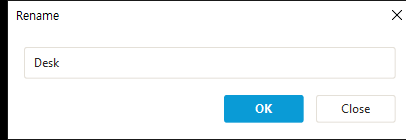
Server connections
Right-click the favourites panel, or a group, and choose Add server connection…. SMB, WebDAV, SFTP, and FTP then appear as folders you can open, copy, and preview.
Pick the type, then enter the display name, address, port, remote path, user, and password. Passwords go to Windows Credential Manager. They are never written to maguro.json.
SMB uses a Windows share. WebDAV may need HTTPS. FTP uses the host and port you enter. SFTP and FTP are mounted with rclone and WinFsp, then browse like any other folder, including preview, the context menu, and fast copy. Maguro can ask to install rclone and WinFsp when you add that kind of connection.
Disconnect when you are finished. A broken share skips folder-size walks unless network folder sizes are on. If a network folder fails to open, press F5.
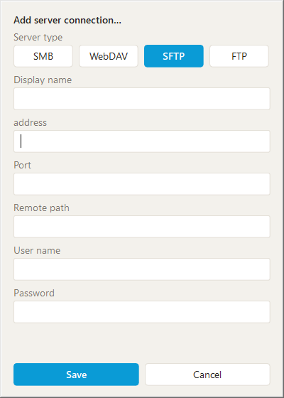
Office files
Open read-only appears when every selected item is .xls, .xlsx, .xlsm, or .csv. It does not appear for .xlsb, for a folder, or for a mixed selection. Maguro starts excel.exe /r with that path, so Excel opens the workbook read-only and other people can still save it.
Tidy to A1 · 100% appears when every selected item is .xlsx or .xlsm. The dialog offers four choices, remembered for the session: move the selection to A1, set zoom to 100%, select the first sheet, and make a .bak.xlsx backup. A file another program has open is skipped, the same way a locked copy is reported, and the summary counts what finished and what was skipped.
Preview of Office files is separate. See Preview & Quick look.
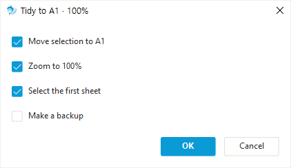
Theme & styled controls
Settings → Appearance sets the theme, the accent, the toolbar, drive buttons, and the status bar. Theme is Follow Windows, Light, or Dark. Light and dark each keep their own accent. The default accent for both is cerulean #0A9BD6. Six swatches plus Custom… are offered. An older settings file that still has the retired mint accent #2EC4A6 is moved to cerulean the next time it is read. Mint is not a choice.
After a theme change, folder lists pick up new colours the next time Maguro starts. The rest of the window updates immediately.
Every dropdown in Settings and in Batch Rename is a styled combo. It is still a native combo box, so F4, Alt+Down, type-to-select, and the mouse wheel behave as they always have. The closed face matches the text fields beside it: card fill, a hairline border, slightly rounded corners, and a filled triangle. On the light theme an enabled arrow is #444444, so it reads on the white face. On the dark theme the arrow uses the theme text colour. Focus, hover, and the open list draw the border in cerulean. The selected row in the list is cerulean with white text. A disabled combo, and a rename rule that is turned off, use the dimmed ink.
This Help site is light only. It does not follow the app theme.
Settings
Ctrl+, opens Settings. The search box jumps to a page, a card, or a shortcut whose title or description matches. Changes apply right away. The file is %APPDATA%\Maguro\maguro.json, or maguro.json beside the exe when portable.txt is next to the exe. A missing file starts from the defaults. A failed write is tried again in 5 seconds. A file that cannot be read is left alone. Unknown keys are kept. The key notes are in docs/settings.md.
General. Display language (Auto follows Windows when a language file matches, otherwise English). Font, applied to the whole window. There is no font size. On startup: restore the last state, open one saved session, or the default layout. Use as the default folder app registers Maguro for filesystem folders and drives only. Win+E, the taskbar, and virtual folders such as shell: stay with Explorer. Default layout. Single instance. Single-window mode. Folders in Open and Save dialogs. The clipboard-path hotkey. Double-click empty space for the parent folder. Everything. WinMerge path.
Appearance. Theme, accent, toolbar, drive buttons, status bar.
Panes & view. Default view for a new pane. Remember view per folder, in folder-views.json next to the settings file: sort, columns, view mode, icon size, and grouping. A default view for every folder, taken from the active pane, plus reset for this folder and clear all. Starting folder for a new pane: This PC, Desktop, or a folder you choose. Hidden files. File extensions, which is Windows’ own setting, the same one Explorer uses. Folder sizes, including an option for network folders that is off by default. Left panel, and whether favourites or the tree is on top. Active pane border. Preview pane. Preview with Space. Wheel moves to next/previous file.
File operations. The Windows copy window is always the path for ordinary paste. Fast copy for network folders. Confirm delete. Default delete. New-file name. Default drag and drop: Windows rules, always copy, or always ask.
Favourites. The tree of groups, folders, and files.
Shortcuts. Double-click a row, or press Change, then the new shortcut. Esc cancels. A conflict can be swapped. Reset restores that row. Changed chords apply on the next key, with no restart. Only chords that differ from the default are stored.
Sessions. The session folder, save on exit (off by default), and the green unsaved dot (on by default).
Advanced. Check GitHub for a newer release on startup. The updater downloads maguro.exe and maguro.exe.sha256 only. A zip-only release is not extracted. Settings file location, export, and import of Maguro JSON or Maguro ini. Reset all settings restores preferences. Layout, folders, and favourites stay. Blocked shell-extension DLL names.
Right-click menu items. Third-party handlers, menu shape, packaged commands, and WinMerge. See Right-click menu.
About. Version, and the credit: Maguro is a fork of efww/grids by efww.
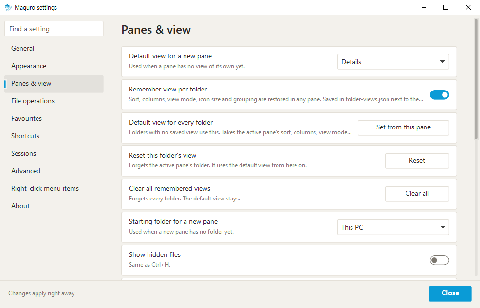
Win+Shift+E and other actions
Keys are listed once in Shortcuts.
Win+Shift+E is global while Maguro is running, when the hotkey setting is on, which it is by default. It brings Maguro forward and focuses the file list. If a Maguro dialog has disabled its owner, that dialog comes forward instead. Press it again while Maguro is already in front: with Single-window mode on, it opens a new tab; with that mode off, Maguro minimises. This chord is not “use as the default folder app”, and it is not Ctrl+Shift+E. Ctrl+Shift+E only shows or hides the left panel, and only while Maguro has focus. Win+E stays with Explorer.
Ctrl+Alt+G jumps a folder into another app’s Open or Save dialog. The chord is registered only while such a dialog (#32770) is in front, and only when the setting is on. It lists folders open in Maguro and navigates the dialog to the one you pick. Virtual folders are skipped. Win+Shift+E is unchanged.
F6 and Shift+F6 move focus. Ctrl+H toggles hidden files. Num+, or Ctrl+Shift+A, selects by pattern. Num− deselects by pattern. Num* inverts the selection. Alt+Left, Alt+Right, and Alt+Up are back, forward, and parent. Alt+Down opens recent folders. Ctrl+Alt+R opens Recent files, newest first. Ctrl+Enter shows the selected recent file in its folder, and only in that pane. Elsewhere the key is passed through.
Shortcuts
These are the defaults. Change any of them in Settings → Shortcuts. The in-app list (Ctrl+/) follows your changes immediately, with no restart. This page lists the defaults that ship with 0.2.3.
Win+Shift+E and Win+Alt+V are registered for the whole time Maguro is running. Ctrl+Alt+G is registered only while another app’s Open or Save dialog is in front. Workspace chords are not global. Pane-tab chords run only while focus is in a pane.
| Keys | Action |
|---|---|
| Tab | |
| Ctrl+T | New tab |
| Ctrl+W | Close tab |
| Ctrl+Tab | Next tab |
| Ctrl+Shift+Tab | Previous tab |
| Ctrl+Shift+T | Reopen closed tab |
| Ctrl+Alt+K | Duplicate tab |
| Ctrl+Shift+L | Tab list |
| Pane | |
| Ctrl+Page Down | Next pane |
| Ctrl+Page Up | Previous pane |
| Ctrl+1…9 | Go to pane 1–9 |
| Pane tab | |
| Ctrl+Alt+T | New pane tab |
| Ctrl+Alt+W | Close pane tab |
| Ctrl+Alt+Page Down | Next pane tab |
| Ctrl+Alt+Page Up | Previous pane tab |
| Move | |
| Alt+Shift+← | Pane to the left |
| Alt+Shift+→ | Pane to the right |
| Alt+Shift+↑ | Pane above |
| Alt+Shift+↓ | Pane below |
| Ctrl+Alt+Shift+← | Swap with the pane to the left |
| Ctrl+Alt+Shift+→ | Swap with the pane to the right |
| Ctrl+Alt+Shift+↑ | Swap with the pane above |
| Ctrl+Alt+Shift+↓ | Swap with the pane below |
| Alt+← | Back |
| Alt+→ | Forward |
| Alt+↑ | Parent folder |
| Alt+↓ | Recent folders |
| Ctrl+L / Alt+D / F4 | Address bar |
| View | |
| Ctrl+F | Search this folder |
| F3 | Quick look |
| Alt+P | Preview pane |
| F6 | Next focus |
| Shift+F6 | Previous focus |
| Ctrl+H | Show hidden files |
| Ctrl+Shift+E | Show the left panel |
| Ctrl+Shift+O | Open Explorer folders |
| Ctrl+Alt+R | Recent files |
| Ctrl+Shift+M | Maximise / restore the pane |
| File | |
| Ctrl+Shift+C | Copy full path |
| Ctrl+Shift+R | Batch rename |
| Num+ / Ctrl+Shift+A | Select by pattern |
| Num− | Deselect by pattern |
| Num* | Invert selection |
| Ctrl+Alt+N | New text file |
| Ctrl+Shift+N | New folder |
| F7 | New folder in this pane |
| Ctrl+Alt+C | Compare folders in WinMerge |
| Ctrl+Shift+B | File Basket |
| Ctrl+Alt+B | Add selection to basket |
| Ctrl+Enter | Show in folder (Recent files only) |
| Session | |
| Ctrl+S | Save this tab |
| Workspaces | |
| Ctrl+Alt+1…9 | Load workspace |
| Ctrl+Alt+Shift+1…9 | Save workspace |
| Favourites | |
| Ctrl+B | Favourites |
| Help | |
| Ctrl+, | Settings |
| F1 | This Help, in the browser |
| Ctrl+/ | Shortcut list |
| Window | |
| Win+Shift+E | Bring Maguro to the front |
| Ctrl+Alt+G | Jump to a folder in a file dialog |
| Win+Alt+V | Open clipboard path |
| Ctrl+N | New window |
| Ctrl+Shift+W | Folder Watch |
Explorer keys that Maguro does not rebind: F2 rename, Del and Shift+Del, Ctrl+C, Ctrl+X, Ctrl+V, and F5 refresh.
Mouse: the layout button, address-bar chevrons, a splitter double-click, a pane-header right-click for colour, a pane-tab middle-click to close, and a pane-number drag to swap or, with Ctrl, to duplicate.
Languages
English is compiled into the program and is the fallback. Korean, Japanese, French, and German ship as lang/lang.ko.ini, lang/lang.ja.ini, lang/lang.fr.ini, and lang/lang.de.ini. On first run, and again whenever the version changes, Maguro writes those four files into the lang folder next to the settings file. It always overwrites those four. It never writes, overwrites, or deletes a lang.xx.user.ini, or any other lang.xx.ini you add.
A file is UTF-8. A leading BOM is ignored. Lines are key = text. [meta] name is the label in the language list. [meta] font is an optional UI font. A missing key uses the English text. lang.xx.user.ini is loaded on top and wins.
Auto follows the Windows display language when a matching file exists, otherwise English. Explorer parts inside each pane, such as column names and the shell’s own right-click items, follow the Windows display language. The font defaults to that language’s face: Malgun Gothic for Korean, Yu Gothic UI for Japanese, otherwise Segoe UI, or the face named in the file. A face you choose applies to the whole window at once.
Troubleshooting
A folder will not open. Click the pane and press F5. F5 reloads the active pane and retries a failed network folder.
Subfolder search finds nothing. Install Everything, start it, and check Settings → General. Without it, Maguro walks the disk, and only after you tick Subfolders.
A network copy is slow, or you expected Maguro’s progress window. Turn on Fast copy for network folders, or use Fast paste. Off uses the Windows copy window. Fast copy does not run for a purely local copy unless you choose Fast paste.
WinMerge does not start. Set its path under Settings → General. Folder compare needs a real folder. The right-click WinMerge commands stay hidden until you enable them.
SFTP fails. Install rclone and WinFsp when asked, and check the host, port, user, and password. WebDAV may need HTTPS. SMB uses a Windows share. FTP uses the host and port from the connection.
The window theme changed but the folder lists did not. Restart Maguro. Lists take the theme at startup.
Maguro closed unexpectedly last time. The next start shows where the report was written, in the crashes folder next to the settings file, and offers to open that folder. A report includes the version, the thread, the exception, the faulting module, the last folder, and loaded shell-extension DLLs.
A second launch seems to do nothing. Single instance or single-window mode is on, so the first window stays and paths arrive as tabs. An installable update replaces maguro.exe and restarts. A zip-only release is not extracted. Replace the exe yourself when the update window says so.
Do not run Maguro as administrator. Tools such as PowerToys Mouse Crosshairs cannot follow the cursor over an elevated window (UIPI). Run Maguro normally, or run both as administrator.
SmartScreen warns on first run because the exe is not code-signed. Choose More info → Run anyway.
An old .grids, .qdr, or grids.ini will not open. Save a new .maguro session from the current window.